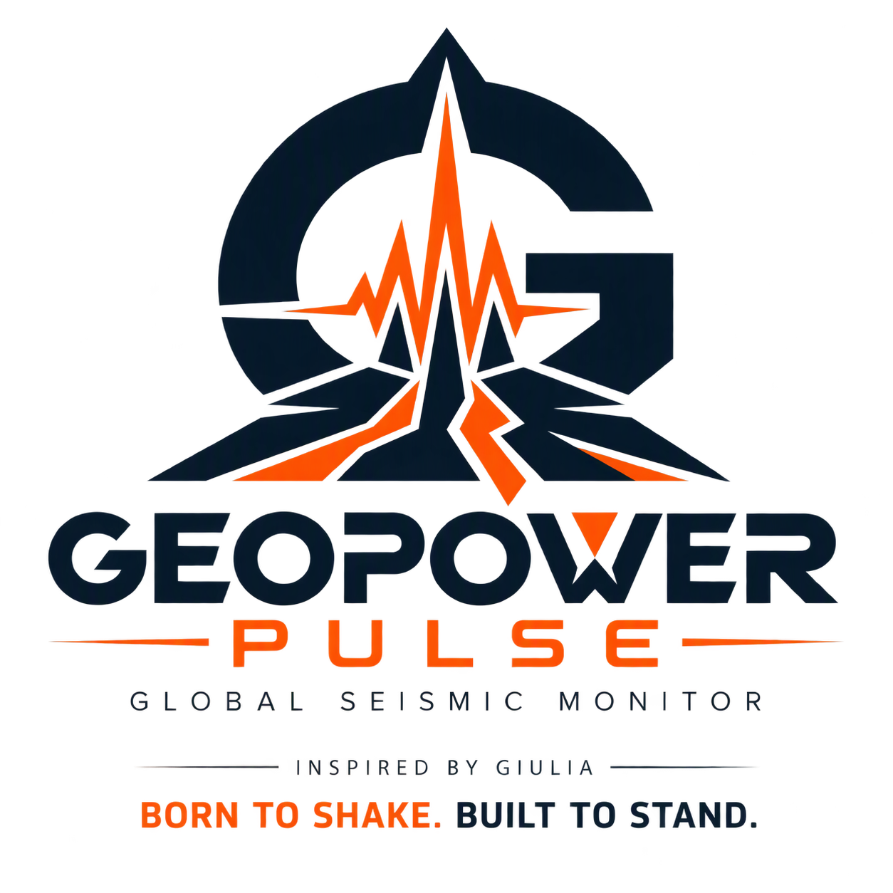

10 días
Ventana móvil de actividad sísmica publicada.

Monitor global de actividad sísmica que integra información del IGP/CENSIS, EMSC y USGS en un único feed compatible con EARTHQUAKE 3D.
Ventana móvil de actividad sísmica publicada.
Registros duplicados eliminados automáticamente.
Actualización programada cada 5 minutos. GitHub puede ejecutarla con retraso.